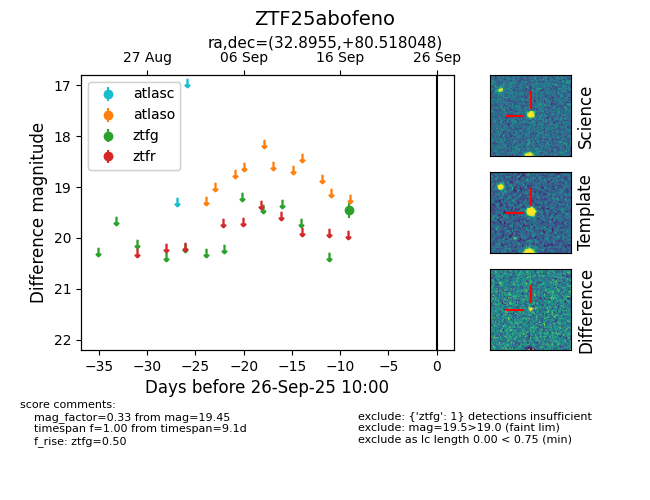

FINK: ZTF25abofeno
Lasair: ZTF25abofeno
ALeRCE: ZTF25abofeno
ZTF25abofeno (ztf,fink)
equatorial (ra, dec) = (32.8955,+80.51805)
galactic (l, b) = (126.3377,+18.18062)

last ztfg=19.45
1 ztfg detections